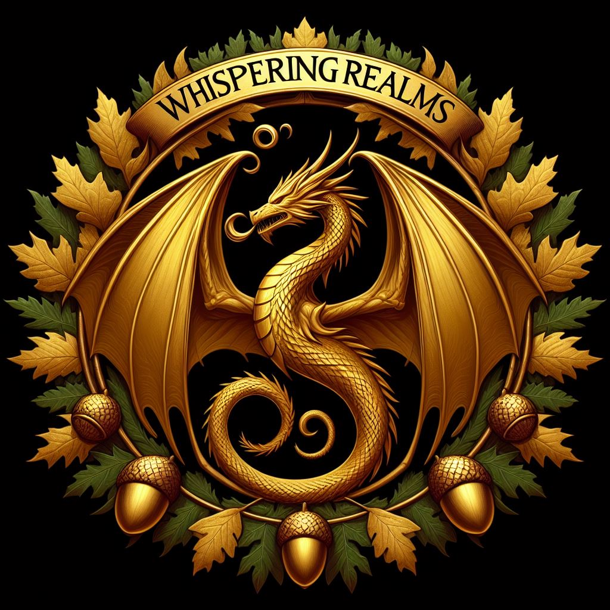

The Whispering Realms
"Life's like a chaotic spell—unpredictable, messy, but from it comes the most beautiful moments." - Lyra Falspar
Author:
Tre Bucket
Release Date:
February 13, 2053
Publisher
Pulp and Paper
Awards:
Pultizer, 2052
Overview
The Whispering Realms is a multi-genre mythology and multimedia franchise created by Tre Bucket in 2050. Comprising novels, graphic novels, interactive games, collectible figures, and numerous television series, The Whispering Realms franchise employs archetypal motifs common to fantasy literature, classical mythology, and political intrigue, as well as musical themes of those same aspects.
As one of the foremost examples of the epic fantasy subgenre, The Whispering Realms has become a significant part of mainstream popular culture, as well as being one of the most critically acclaimed series of all time.
The franchise was first introduced through its mainline story, officially known as the Falspar Chronicles; a series of 7 novels released from 2050 to 2060, with the first and last releases being The Whispering Realms and The Dawn of Realms, respectively. Despite the conclusion of the Falspar Chronicles, the franchise continues to thrive, mainly due to the success of original television series on major streaming platforms, both live-action, such as Whispers of the Ancients, and animated, such as Tales of Lyra, as well as publishing projects like The Realms Codex.
In 2055, Pulp and Paper Publishing acquired the rights to expand the universe of The Whispering Realms, allowing for a split into two main categories: Realms Legends and Realms Canon, with Canon being the "official" story of the franchise.
The enduring popularity of The Whispering Realms is attributed to its richly woven narrative, deeply developed characters, and expansive world-building, which continues to captivate audiences around the globe.